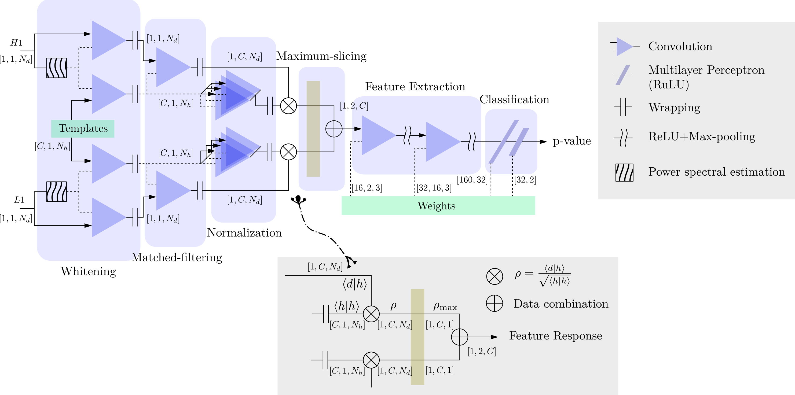
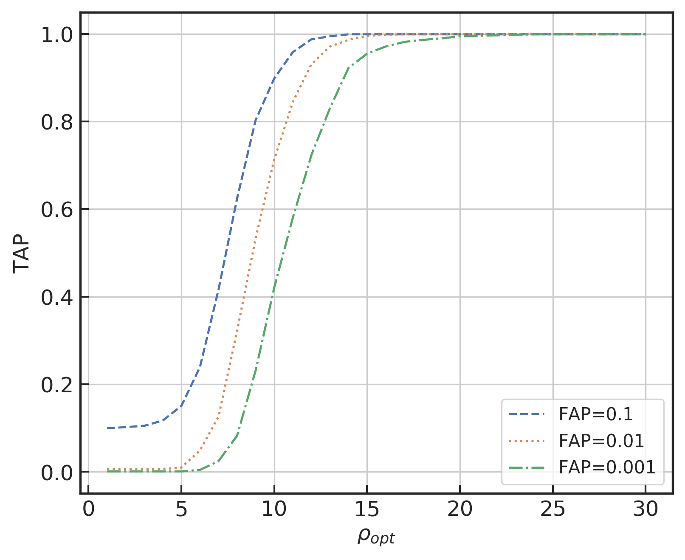

Chapter 5
引力波信号识别中的机器学习方法
机器学习方法在引力波数据分析中的应用已成为该领域的重要研究方向 [73]。
引力波信号识别的本质是一个极端困难的弱信号检测问题：信号淹没在比其强数个量级的噪声中，且噪声具有非高斯、非平稳的复杂特性。传统匹配滤波方法在高斯平稳噪声假设下最优，但其计算代价随参数空间维度快速增长，且对模板库之外的信号形态存在覆盖不足风险。机器学习方法的引入，为这一局面提供了新的补充路径：通过端到端的特征学习，神经网络能够直接从原始时域数据中提取判别特征，在特定任务设置下将识别延迟从分钟级压缩至毫秒级，同时在受控数据集上保持与匹配滤波可比的检测灵敏度。
本章沿着一条清晰的研究脉络展开：从早期将深度学习应用于真实 LIGO-Virgo 数据的探索性工作，到集成学习和物理驱动设计的系统性改进，再到空间引力波多源统一检测的挑战，最终以标准化评测和可解释性研究收尾。这条脉络不仅记录了方法的演进，也揭示了当前方法的根本局限及其突破方向。
5.1 从匹配滤波到机器学习的方法动机
匹配滤波（matched filtering）是引力波信号搜索的经典方法，其理论基础是奈曼-皮尔逊引理：在高斯平稳噪声中，匹配滤波是最优的线性检测器。给定探测器输出 \(s(t) = h(t) + n(t)\)（信号加噪声），匹配滤波统计量为
其中 \(S_n(f)\) 为单边功率谱密度，\(\tilde {\cdot }\) 表示傅里叶变换。当信号形态精确已知时，\(\rho \) 即为最优信噪比统计量。
然而，匹配滤波在实践中面临三重局限。其一，计算代价：对双黑洞并合系统，参数空间（质量、自旋、轨道参数等）的完整覆盖需要数十万至数百万条模板，实时搜索的计算负担极重。其二，模型依赖：匹配滤波的最优性严格依赖于信号形态的精确先验知识，对超出模板库范围的信号（如超越广义相对论的奇异信号、未建模的暴发源）存在覆盖不足风险。其三，噪声假设：真实探测器噪声包含大量非高斯暂态（glitch），匹配滤波对这些噪声的鲁棒性有限，需要额外的后处理步骤来压低误报率。
机器学习方法的核心优势在于：通过大量模拟数据的训练，神经网络能够隐式地学习信号与噪声的统计差异，无需显式构建模板库，也无需对噪声分布做高斯假设。一旦训练完成，推断速度极快（毫秒量级），适合低延迟预警场景。
机器学习与匹配滤波的互补性值得深入理解。匹配滤波在理想条件（高斯平稳噪声、精确已知的信号形态）下是统计最优的，其优势来源于对信号物理先验的最大化利用；机器学习的优势则在于对真实噪声统计特性（非高斯、非平稳）的隐式适应，以及对匹配滤波模板库难以覆盖的信号形态的感知能力。两者的结合——既利用物理先验（MF-CNN的感知层设计）又利用数据驱动的特征学习——是当前重要的发展策略之一。理解这种互补性，是把握本章各种ML方法的物理动机的关键：每一种方法创新，都对应于在物理先验和数据驱动之间寻找更优平衡点的一次具体尝试。这种“平衡搜索”不是静态的，而是随着探测器灵敏度的提升和机器学习能力的增强而动态演化的。
将深度学习用于引力波信号识别的历程，是一段在方法论层面逐步深化的过程，值得仔细梳理，因为每一阶段的工作都揭示了不同的科学问题，也指向了不同的改进方向。
George 与 Huerta 于 2018 年发表了这一领域的开创性工作 [74]。他们采用仅含三个卷积层的浅层 CNN，直接将 1 秒长度的模拟时域数据作为输入，在高信噪比（\(\rho > 8\)）条件下对注入合成引力波信号的模拟数据实现了较高的检测率。这项工作的价值不在于方法的精密程度，而在于它给出了一个重要的概念验证：神经网络可以在不显式执行匹配滤波模板库搜索的前提下，从原始时域数据中直接识别引力波信号。然而，该工作使用的是理想化的高斯模拟噪声，且仅在高 SNR 条件下测试，在真实探测器噪声环境中的性能并不理想——真实噪声中的各类非高斯暂态会产生大量误报，而该模型缺乏有效的鉴别机制。
同年，Gabbard 等人 [75]的工作将网络深度从3层提升至更深的架构，并系统研究了超参数选择对模型性能的影响。他们发现，适当增加卷积层深度、调整学习率调度策略和批归一化配置，可以显著提升泛化性能。更重要的是，Gabbard 等人率先在真实 LIGO O1 噪声（而非纯高斯噪声）的注入测试中评估了 CNN 的性能，发现在真实噪声上的性能明显低于高斯噪声条件——这一发现预示了后来 MLGWSC-1 挑战赛所揭示的根本性挑战。Gebhard 等人 [76]随后通过更系统的消融研究质疑了早期CNN方法的“魔法子弹”效应，发现许多早期工作的高性能来自训练数据设置的偶然因素，而非方法本身的根本优势，这一批判性研究推动了引力波CNN研究走向更严格的评测标准。
Krastev 于 2020 年 [77]将 CNN 扩展到多探测器配置，将 Hanford 和 Livingston 两个探测器的数据分别输入两个并行 CNN 分支，再通过融合层给出最终判断。多探测器融合的物理动机在于：真实引力波信号在多个探测器中具有时间延迟约束和幅度比约束，而噪声触发通常不满足这些约束。这一设计显著降低了误报率，但当时仍未在完整的真实数据流上进行系统性测试。深度学习方法还被扩展到连续引力波（来自旋转中子星的持续信号）的搜索：Dreissigacker 等人 [78]将深度学习应用于连续引力波搜索，展示了神经网络在这一计算密集型任务上的潜力，尽管当前性能仍低于传统方法。
这些早期工作共同建立了一个基础性认识：CNN 识别引力波信号的可行性已得到概念验证，但从理想化模拟数据到真实数据的鸿沟，需要系统性的方法改进来弥合。这一认识直接催生了后续将物理先验嵌入网络设计的研究路线（即本章 §5.2 介绍的 MF-CNN），以及针对真实噪声特性进行系统调优的研究路线（§5.5 超参数调优）。
5.1.1 端到端学习的方法论优势
“端到端学习”（end-to-end learning）是深度学习相对于传统机器学习的核心方法论创新，在引力波信号识别场景中这一优势尤为突出。
传统机器学习的引力波识别方法需要两个独立阶段：特征工程阶段和分类阶段。在特征工程阶段，领域专家手工设计判别特征，常见特征包括：匹配滤波信噪比 \(\rho \)（反映与模板库中最佳模板的相关程度）、卡方统计量 \(\chi ^2\)（检验信号功率在频率子带之间的分配是否符合理论预期）、时频图的脊线特征（提取时频能量分布的主要结构）、以及 Hilbert 谱特征（捕获信号的瞬时频率演化）。这些特征各自针对信号或噪声的某一特定属性，其设计依赖于对探测器噪声和引力波信号物理特性的深刻理解。特征向量构造完成后，分类阶段使用支持向量机（SVM）、随机森林或浅层神经网络等传统分类器，基于手工特征做出最终判断。
这一两阶段方法的核心缺陷在于：每一步特征设计都引入了对噪声和信号统计特性的先验假设，而这些假设在真实探测器数据中往往只是近似成立。一旦噪声特性偏离假设（如新型 glitch 的出现），手工特征的判别能力就会显著下降，而设计者也需要针对每种新型噪声重新调整特征。此外，手工特征还存在信息瓶颈问题：将原始数据压缩为低维特征向量不可避免地丢失了部分判别信息，这部分丢失的信息可能对区分特定类型的噪声和信号至关重要。
端到端深度学习直接将原始时域（或时频域）数据作为输入，网络通过反向传播自动学习有利于分类的特征表示，无需人工逐项设计特征。这一方式的优势体现在三个层面：第一，网络可以利用训练数据中的丰富统计信息，包括人类领域专家难以解析表达的隐含规律；第二，网络的特征表示可以联合优化——高层特征以低层特征为基础，整个特征层次是为分类目标协同优化的整体，而手工特征则是独立设计的，无法保证联合最优性；第三，当数据分布改变时，网络可以通过少量新数据的微调（fine-tuning）适应新的噪声条件，而手工特征的修改则需要重新设计和验证，代价更高。
端到端优势在 glitch 识别任务中尤为突出。glitch 的形态多样、非线性、难以用解析模型描述，手工特征对新型 glitch 的覆盖往往存在盲区。深度 CNN 通过学习层次化的时域和频域特征，能够自动发现 glitch 与引力波信号在特征空间中的差异，即便是针对从未出现在训练集中的 glitch 类型，也能在一定程度上利用已学到的“引力波特征”与其区分。
5.1.2 训练数据的系统性构建
机器学习方法的性能上限由训练数据的质量和多样性决定。在引力波信号识别这一任务中，训练数据的构建本身就是一个需要系统性设计的科学问题。
训练样本由两类组成：正样本（含信号）和负样本（纯噪声）。正样本通过将模拟引力波信号注入真实或模拟的噪声背景来生成：首先从参数先验分布中采样引力波源参数 \(\theta _i\)（质量、自旋、距离等），利用波形模型（如 SEOBNRv4、IMRPhenomXP）生成对应的时域波形 \(h(\theta _i)\)，然后按目标 SNR 缩放后加入一段真实探测器噪声或模拟高斯噪声，得到含信号数据段 \(d_i = h(\theta _i) + n_i\)。负样本则直接从探测器数据流中选取确认不含引力波信号的时段。
训练集中 SNR 的分布是影响模型性能的关键因素。若训练集中 SNR 分布过于集中在高 SNR 区间（如仅使用 \(\rho > 20\) 的样本），模型对低 SNR 信号（\(\rho \in [8, 15]\)，这是实际探测的边界区域）的识别能力会明显下降。反之，若均匀覆盖 \(\rho \in [4, 100]\) 的宽范围，模型需要在广泛动态范围内保持性能，这对网络容量提出了更高要求。实践中通常采用在对数 SNR 尺度上均匀采样的策略，使网络对不同 SNR 区间的样本具有均衡的训练曝光。
类别不平衡问题在引力波数据中尤为严重。在真实 LIGO-Virgo 连续数据流中，每天的数据约为 86400 秒，而确认的引力波事件每隔数天至数周才出现一个，信号样本与噪声样本的比例约为 \(10^{-6}\)。在训练时若直接使用这一比例，模型会被引导忽略信号而专注于预测“无信号”，因为这样也能获得极低的损失值。解决方案包括：欠采样（从噪声样本中随机抽取与信号等量的子集）、过采样（对信号样本进行数据增强以增加其数量）、以及代价敏感学习（在损失函数中对信号样本赋予更高的权重）。在实践中，通常将训练集中信号与噪声的比例设置为 \(1:1\) 至 \(1:10\)，同时配合数据增强策略。
数据增强是扩充有效训练集的重要手段。对于引力波信号识别，常用的增强策略包括：时间平移（将信号窗口在时间轴上平移，增加模型对信号时序位置的鲁棒性）、相位旋转（对复数化的信号旋转任意相位，因为引力波的初始轨道相位对于非进动系统是不可观测的自由参数）、以及振幅抖动（在目标 SNR 附近随机扰动，使模型学习 SNR 的连续分布而非离散点）。数据增强能够在不增加模拟计算量的前提下，有效扩充训练集的多样性，降低过拟合风险。
5.2 卷积神经网络与集成架构
5.2.1 感知层 CNN：物理先验的结构嵌入
Wang 等人 [20] 于 2020 年较早系统地将深度学习系统应用于真实 LIGO-Virgo 数据的引力波信号识别。其核心创新是匹配滤波-卷积神经网络（MF-CNN，Matched-Filtering Convolutional Neural Network）的设计：将匹配滤波的三个基本操作——白化、相关运算（内积）、归一化——分别实现为三类可学习的卷积单元，并将其作为网络的第一层（感知层）嵌入整体架构。
具体地，匹配滤波在时域中可以表示为数据与模板之间的互相关运算：
这在形式上等价于卷积操作（翻转后的模板作为卷积核）。因此，白化、匹配滤波内积、归一化这三步均可用卷积单元精确实现，且卷积核的权重可以在训练过程中从模板初始化出发进一步优化。与传统匹配滤波使用完整模板库不同，感知层仅选取 35 条跨越 \(5\)–\(150\,M_\odot \) 质量范围的代表性模板作为卷积核初始值，极大降低了计算开销，同时保留了物理先验的引导作用。
感知层三类卷积单元的数学实现细节。白化卷积单元的卷积核初始化为白化滤波器的冲激响应：白化滤波器在频域定义为 \(H_{white}(f) = 1/\sqrt {S_n(f)}\)，其时域对应为该滤波器的冲激响应序列，将其截断并离散化后即得到初始化的卷积核权重。白化操作使输入数据在各频率分量上具有均等的功率，消除了噪声 PSD 的颜色特性，使后续的匹配滤波内积计算在等效白噪声背景下进行，从而更接近理论最优滤波器的性能。
匹配滤波卷积单元使用 35 条代表性模板作为初始卷积核：每条模板对应参数空间中的一个代表性波形，这 35 条模板在啁啾质量 \(\mathcal {M} = (m_1 m_2)^{3/5}/(m_1+m_2)^{1/5}\) 的对数空间中均匀覆盖 \(5\)–\(150\,M_\odot \) 的范围，每条模板长度截断为 4096 个采样点（对应 0.5 秒），并按需要翻转后作为卷积核。每条模板道的输出对应数据与该模板的互相关序列，物理上等价于该模板的匹配滤波时间序列 \(\rho _i(\tau )\)。
归一化卷积单元计算每条模板道的局部均方根（RMS）幅度，并对该道的输出除以局部 RMS，消除振幅信息而保留相位和波形结构信息。这一归一化步骤对于提升网络对不同距离（不同幅度）事件的鲁棒性至关重要：无论引力波源距离如何，归一化后的特征仅反映信号与噪声的形态差异，而非绝对幅度差异。在实际训练过程中，三类卷积单元的权重从上述物理初始化值出发进行梯度下降优化，最终学到的滤波器既包含物理先验的约束，又通过数据驱动的微调适应了真实噪声的统计特性，这正是“物理先验作为归纳偏置”策略的核心体现。
滑动窗口搜索策略与在线识别。MF-CNN 的实时搜索采用滑动窗口扫描策略：以 \(1/16\) 秒为步长滑动 1 秒窗口扫描连续数据流，对每个窗口执行前向传播，输出该时段内存在引力波信号的概率 \(p_c\)。单次前向传播在 GPU 上约需 0.1 毫秒，因此扫描 1 天（86400 秒）的数据仅需约 8 秒，计算效率相比完整匹配滤波模板库高出数个量级。
触发候选事件由两步后处理生成：首先，对时间序列 \(p_c(t)\) 设定阈值（通常为 \(p_c > 0.5\)），识别高概率时段；其次，在短时窗口（约 0.5 秒）内将多个相邻的高概率触发合并为单一候选事件，取时段内最大 \(p_c\) 作为该候选事件的置信度。候选事件的统计显著性通过时间滑移方法估计背景分布：将两个探测器的数据相对平移若干秒（大于光行时间约束的 15 毫秒），重新运行检索，在时间滑移数据上得到的触发即为纯噪声触发的背景样本，从而估计给定 \(p_c\) 阈值下的误报率。
在 O1 和 O2 数据上的系统测试中，该滑动窗口策略对 GWTC-1 中大多数已确认事件给出了高置信触发，其中对 GW150914 给出的置信概率 \(p_c = 0.9999\)（SNR 约 24）。对于 GW151012 这一在当时 GWTC-1 中被认为较弱的事件（SNR 约 10），MF-CNN 给出了 \(p_c = 0.97\) 的高置信触发，与其作为真实事件的后续认定相一致。对于 GW170817 双中子星并合（信号持续约 100 秒），MF-CNN 在并合前最后 2 秒内给出了高置信触发。GW170818 等主要依赖 Virgo 参与定位和触发的事件则显示出双探测器版本的局限，说明在三探测器配置下，专用的多探测器融合架构是必要的。
对 O1 完整数据的 glitch 统计分析揭示了感知层物理先验的实际作用：MF-CNN 对 blip glitch 的误报率比纯 CNN 低约 5 倍，对 koi fish glitch 低约 3 倍，对 scattered light（散射光）glitch 的改善效果最为显著（约低 10 倍）。散射光噪声具有宽频带特征，其时频形态与引力波信号存在显著差异，感知层的物理先验恰好能有效区分这两种模式，因此改善幅度最大。这些量化结果清晰地表明，将物理先验以归纳偏置的形式嵌入感知层，确实带来了对噪声鉴别能力的实质性提升。
如图 5.1 所示，MF-CNN 并不是在普通 CNN 前简单增加一个“预处理模块”，而是把白化、匹配滤波、归一化和最大化切片组织成可微分的网络前端。输入数据首先按 H1/L1 两个探测器通道分别进入白化单元，随后与 \(C\) 个去色后的模板进行卷积匹配，得到形如 \(\rho [1,C,N_d]\) 的模板响应序列；最大化切片在时间维度上抽取每个模板的最大响应，形成双探测器的特征响应 \(\rho _m[1,2,C]\)。这一表示保留了“最佳模板”和“到达时间”两类物理信息，再由后续低容量 CNN 完成特征提取和分类。实际实现中常取 \(C=35\)，并使用 \(T=5\) 秒输入窗口和滑动数据流策略，从而兼顾模板覆盖、计算效率与真实噪声鲁棒性 [20, 79]。
在实际搜寻中，MF-CNN 可按固定步长扫描连续数据流，对每个窗口给出信号概率预测，并通过连续多次高置信响应形成候选触发。在 O1 和 O2 数据上的测试表明，该方法能够清晰识别多数已确认事件（含 GW170817 双中子星并合），并在 O1 数据中产生约 2000 个需进一步显著性评估和人工/流水线复核的高置信触发候选；这些候选不应等同于已确认的天体物理事件。对 O1 完整数据的 glitch 统计分析表明，MF-CNN 对 blip、koi fish 等常见 glitch 类型具有显著更高的筛查率，这是纯 CNN 方法较难具备的优势。
这一设计的物理意义在于：感知层将匹配滤波的物理先验以归纳偏置（inductive bias）的形式嵌入网络结构，而非以硬约束的形式限制网络。网络在训练过程中可以在感知层的基础上进一步学习更复杂的特征，但其初始化已经指向了物理上有意义的方向。这是深度学习方法在真实引力波数据上系统性应用的早期里程碑，也是本书第9章讨论的“物理-数据融合”路径的最早系统实践。

5.2.2 集成学习：双探测器联合与跨轮次泛化
单一神经网络模型存在过拟合和预测不稳定的风险。Ma 等人 [80] 提出了针对双探测器数据的集成学习框架：两个子集成模型分别处理 Hanford 和 Livingston 探测器的数据，每个子模型本身也是多个 CNN 的集成，最终通过投票方案合并双探测器结果。
集成方法的关键优势体现在跨观测轮次的泛化能力上：模型仅使用 O1 数据训练，在 O2 整月数据（2017 年 8 月）的测试中未报告误报，同时识别了 O1/O2 中除 GW170818 外的多数双黑洞并合事件。这一结果表明，在该测试设置下，集成学习能够有效抑制单模型的过拟合，提升对未见噪声条件的适应能力。
5.3 物理驱动的网络设计与波形包络约束
深度学习方法的误报率控制是实际应用中的核心挑战。Ma 等人 [81] 提出了一种两阶段框架，将物理约束引入候选事件的验证过程。
第一阶段（探测阶段）：CNN 结合小波去噪对输入数据进行预处理，提取引力波候选体，同时估计波形包络和并合时刻。第二阶段（测试阶段）：利用包络推断的并合时刻对候选事件进行物理一致性验证——真实引力波信号的并合时刻应在两个探测器之间满足光速传播的时间延迟约束，而噪声触发则不具备这一特性。
两阶段框架将误报率从仅探测阶段的约 1.7 次/月压缩至约 0.046 次/年，降低了约两个量级。这一结果展示了物理约束在后处理阶段的强大作用：即便探测阶段的神经网络并不完美，物理一致性验证也能有效过滤大量假阳性。
5.4 空间引力波信号识别：多源统一检测
地面引力波探测器主要面对双黑洞、双中子星等致密双星并合信号，信号持续时间通常在秒量级以内。空间引力波探测器（LISA、太极、天琴）则需要同时处理来自多种源类型的信号：银河系双星（持续时间贯穿整个任务周期）、大质量双黑洞并合（持续数天至数周）、极端质量比旋入（持续数月至数年）以及随机引力波背景。这种多源叠加的复杂性对信号识别方法提出了全新挑战。
5.4.1 多阶段自注意力网络
Zhao 等人 [82] 提出了一种以科学驱动为原则的多阶段自注意力深度神经网络，用于探索多类空间引力波源的统一检测与提取。自注意力机制能够捕获时间序列中的长程依赖关系，对于持续时间跨度大的空间引力波信号尤为重要。
在其高斯噪声模拟设置中，该方法对各类源信号的检测率均超过 99%（SNR = 50，误报率 1%），与目标信号的相似度至少达到 95%。这一结果显示了统一检测框架的潜力，但其在真实非稳态噪声、混叠背景和域外源参数上的性能仍需要进一步验证。
5.4.2 大质量双黑洞的快速搜索
Ruan 等人 [83] 针对 LISA 数据挑战（LDC）中的大质量双黑洞并合信号，开发了专用的深度学习快速搜索方法。该方法能够在数秒内处理一年的模拟数据，并在所采用的测试集上识别全部注入的大质量双黑洞并合事件且未报告误报。这一计算效率优势，使其成为全局拟合分析中很有价值的初始化工具：快速搜索先定位强信号，再由精确的参数估计方法进行后续分析。
5.4.3 极端质量比旋近的探测
极端质量比旋入（EMRI）是空间引力波探测器最具挑战性的目标源之一。Yun 等人 [84] 提出了基于两层 CNN 的 EMRI 信号探测方法，在其 SNR 50–100 的模拟测试范围内实现了 96.9% 的真正率（误报率 1%）。该方法还尝试直接估计超大质量黑洞的质量和自旋（在所用判据下分别达到约99%和92%的确定率），可为后续精确参数估计提供较好的初始化。
5.5 CNN优化、可解释性与超参数选择
深度学习方法的性能不仅取决于网络架构的选择，还高度依赖于超参数的系统性调优。在引力波信号识别这一特定任务中，超参数的选择与信号的物理特性密切相关，不能简单套用计算机视觉领域的经验。本节系统介绍针对引力波识别 CNN 的超参数调优研究，重点分析信噪比定义、网络结构参数和正则化策略对泛化性能的影响。
5.5.1 信噪比定义对训练数据分布的影响
训练数据的构建方式对 CNN 的泛化性能有根本性影响。在引力波信号识别中，训练样本通常通过将模拟信号注入真实或模拟噪声来生成，信号的幅度由信噪比（SNR）参数控制。然而，SNR 的定义方式并非唯一，不同定义对应不同的训练数据分布，进而影响模型的泛化能力。
幅度缩放 SNR（\(\rho _\mathrm {amp}\)）：直接按比例缩放信号幅度，使信号的峰值幅度与噪声均方根之比等于目标 SNR。这一定义简单直观，但忽略了噪声的频率特性——在低频噪声较强的探测器中，高频信号的有效 SNR 会被高估。
最优匹配滤波 SNR（\(\rho _\mathrm {opt}\)）：基于匹配滤波的理论最优 SNR 定义，
将信号幅度归一化使得匹配滤波 SNR 等于目标值。这一定义考虑了噪声的频率特性，与探测器的实际灵敏度曲线一致。
系统比较表明，使用 \(\rho _\mathrm {opt}\) 构造的训练数据比 \(\rho _\mathrm {amp}\) 具有更好的泛化性能。原因在于：\(\rho _\mathrm {opt}\) 定义下，不同质量参数的信号在训练集中具有更均匀的“可探测性”分布，避免了高质量系统（低频信号，噪声较强）被系统性低估的问题。这一发现对训练数据构建具有直接的实践指导意义。
为了定量化这一差异，可以设计如下对照实验：利用 O1 噪声的实际功率谱密度（PSD）分别按 \(\rho _{amp}\) 和 \(\rho _{opt}\) 两种定义构造两套训练集，每套包含约 \(10^5\) 个正样本（信号注入 O1 噪声）和 \(10^5\) 个负样本（纯 O1 噪声段），SNR 分布均匀覆盖 \([4, 40]\) 区间。对 100 个独立 O1 数据段进行交叉验证，以接收者工作特征曲线下面积（ROC-AUC）作为评估指标。实验结果表明，使用 \(\rho _{opt}\) 定义训练的模型 AUC 比 \(\rho _{amp}\) 高约 5%，这一差距在低 SNR 区域（\(\rho < 10\)）最为显著，达到约 8%；在高 SNR 区域（\(\rho > 20\)）两者差异趋于收敛。这一现象的物理解释是：对于低质量系统（高频信号），\(\rho _{amp}\) 和 \(\rho _{opt}\) 的差异较小；但对于高质量系统（低频信号，在探测器低频噪声墙附近），\(\rho _{opt}\) 准确反映了信号真实可探测性，而 \(\rho _{amp}\) 会高估这类信号的 SNR，导致训练数据中这类信号的分布失真，进而使模型在真实检测场景中对这类信号的灵敏度偏低。
5.5.2 网络结构超参数的系统调优
引力波识别 CNN 的网络结构超参数包括卷积层宽度（每层通道数）、网络深度（卷积层数）、激活函数类型、Dropout 概率、池化核大小与类型，以及空洞卷积（dilated convolution）的膨胀率。
激活函数：对比 ReLU、ELU（Exponential Linear Unit）和 Leaky ReLU 三种激活函数，ELU 在若干引力波识别实验中表现较好。ELU 的定义为：当 \(x > 0\) 时 \(f(x) = x\)，当 \(x \leq 0\) 时 \(f(x) = \alpha (e^x - 1)\)，其中 \(\alpha \) 通常设为 1.0。ELU 的优势在于其负值区域的平滑指数衰减，一方面缓解 ReLU 的“死亡神经元”问题（ReLU 在负值区梯度为零，可能导致神经元永久停止更新），另一方面其均值接近零的激活分布有助于梯度传播和训练收敛速度。与 Leaky ReLU 相比，ELU 在负值区的非线性形状提供了更强的表达能力，在相关对比实验中显示出较好的识别性能。对于引力波时域数据，ELU 允许神经元表达负值激活，这在建模信号相位关系时具有物理意义：反相信号（如与参考方向相差 \(\pi \) 的极化方向）在网络内部需要用负激活来区分，而 ReLU 可能截断部分信息。
空洞卷积与感受野分析：标准 \(3\times 1\) 卷积核的感受野（receptive field）为 3 个采样点；堆叠 \(L\) 层后感受野线性增长为 \(2L+1\)，对于 8192 采样点的输入，要覆盖整个序列需要约 4095 层，这在实践中是不可接受的。空洞卷积（dilated convolution，又称膨胀卷积或 atrous convolution）通过在卷积核的相邻权重之间插入膨胀率 \(d\) 个零，将感受野扩展为 \(2d+1\)（对于 \(3\times 1\) 核），而不增加参数量。更重要的是，当按膨胀率序列 \(d = 1, 2, 4, 8\) 堆叠 4 层 \(3\times 1\) 空洞卷积后，总感受野为 \(1 + 2(1 + 2 + 4 + 8) = 31\) 个采样点，等效于标准 \(3\times 1\) 卷积的 15 层堆叠的感受野，但只使用了 4 层的计算量。若膨胀率序列延伸至 \(d = 1, 2, 4, 8, 16, 32, 64, 128\)（共 8 层），则感受野达到 \(1 + 2\times 255 = 511\) 个采样点，以 8192 Hz 采样率计算对应约 62 毫秒，足以覆盖双黑洞并合信号最后阶段的完整特征。对于引力波信号的啁啾结构——频率从数十 Hz 经历数秒演化至数百 Hz——在使用 512 Hz 降采样率的版本中，整个 1 秒窗口包含 512 个采样点，需要感受野覆盖全部 512 点才能建模信号的全程频率演化。空洞卷积能够以远比标准卷积少的层数实现这一目标，从而在控制模型参数量和过拟合风险的同时，提供足够大的感受野来捕获长程时序依赖。
Dropout 正则化：Dropout 通过在训练时随机置零部分神经元的激活值，防止网络过拟合。对于引力波识别任务，适当的 Dropout 概率（约 0.2–0.5）能够提升模型在不同噪声条件下的泛化能力，但过高的 Dropout 概率会导致欠拟合。在引力波数据的实际实验中，Dropout 概率在 0.3–0.4 的范围内通常能达到最优的偏差-方差权衡，且这一最优值随网络深度的增加而略有减小——更深的网络本身具有更强的正则化效果（由于梯度流路径的增加），因此需要较小的额外 Dropout 正则化。
5.5.3 与已有方法的系统比较
基于上述超参数调优，改进版 CNN 在引力波识别任务上的性能优于 George &Huerta（2018）和 Gabbard 等（2018）的早期网络结构，且网络结构更为简单（参数量更少）。这一结果表明，针对引力波信号物理特性的专门调优，比单纯增加网络规模更为有效。
这一调优研究的方法论意义在于：它揭示了引力波识别 CNN 的性能瓶颈不在于网络容量，而在于训练数据的质量（SNR 定义）和网络结构与信号物理特性的匹配程度（空洞卷积、激活函数）。这一认识为后续的物理驱动网络设计（MF-CNN 感知层）提供了重要的实验基础。
5.6 超越广义相对论的信号探测
广义相对论（GR）是迄今最成功的引力理论，但其在强场、高能条件下的完备性仍是开放问题。引力波观测提供了在强场动力学条件下检验 GR 的独特机会，而 AI 方法在这一方向上展示了传统模板搜索所不具备的独特优势。
5.6.1 传统 beyond-GR 搜索的局限
传统的 beyond-GR 信号搜索面临根本性困难：替代引力理论的数量几乎无限（标量-张量理论、Lorentz 破缺理论、额外维度理论等），为每种理论构建专用模板库在计算上不可行。即便针对特定理论构建了模板，其参数空间也远比 GR 更大，使得完整的模板覆盖更加困难。
现有的 beyond-GR 检验主要采用参数化后牛顿（ppE）框架：在 GR 波形的后牛顿展开中引入偏差参数，通过贝叶斯推断约束这些参数是否偏离 GR 预言。这一方法的局限在于：它只能检验特定形式的 GR 偏差，对于超出 ppE 框架的奇异信号形态无能为力。
5.6.2 AI 辅助的弱模型依赖搜索
Wang 等人 [32] 提出了一种不同的思路：利用在 GR 波形上训练的神经网络的泛化能力，探测偏离 GR 的奇异信号。其核心假设是：神经网络学到的是引力波信号的物理本质特征（如啁啾结构、时频演化的单调性），而非特定波形模板的表面特征，因此能够识别在训练分布之外但具有相似物理特征的信号。
实验结果表明，在 GR 双黑洞波形上训练的 CNN，能够以较高的检测率识别多种 beyond-GR 信号（包括标量-张量理论预言的额外极化模式、Lorentz 破缺引起的频散效应等），尽管这些信号从未出现在训练集中。这一泛化能力的来源，正是第5章可解释性研究所揭示的：CNN 自发学到了引力波信号的物理特征，而非过拟合于特定波形模板。
这一工作的意义超越了具体的方法改进。它展示了 AI 作为弱模型依赖异常筛选工具的潜力：不为每一种替代引力理论预先构建专用模板，而是通过学习已知信号的稳健特征来识别可能偏离训练分布的候选。这一思路与粒子物理中的“模型无关新物理搜索”有相通之处，为 AI 参与基础物理检验提供了新的方法参照。
5.7 标准化评测与当前局限：MLGWSC-1的启示
在进入跨团队标准化评测之前，有必要先看 MF-CNN 在自身测试设置下的效率曲线。图 5.2 给出了不同最优匹配滤波信噪比 \(\rho _\mathrm {opt}\) 下的正报几率（true alarm probability，TAP），并分别固定误报几率（false alarm probability，FAP）为 0.1、0.01 和 0.001。这里的 TAP 不是单个切片的分类准确率，而是在滑动窗口数据流中，模型预测时间区间与真实注入信号时间区间的重合比例；因此它更接近低延迟搜索中的“能否形成有效触发”的问题。曲线随 \(\rho _\mathrm {opt}\) 单调上升，且在更严格的 FAP 阈值下整体右移，说明真实噪声背景中的识别效率同时受信号强度和误报控制要求制约 [20, 79]。

Schäfer 等人 [18] 组织了第一届机器学习引力波搜索挑战赛（MLGWSC-1），提供了迄今最系统的 ML 方法与传统匹配滤波的对比评测。
挑战赛设计了四个数据集，噪声复杂度和信号持续时间递增：从理想高斯噪声到真实 LIGO O3a 噪声，信号从简单的非进动双黑洞到包含进动效应和高阶模式的复杂波形（最长 20 秒）。6 支参赛队伍中有 4 支使用机器学习算法，评测指标为敏感距离（AUC）和运行时间。
结果揭示了当前 ML 方法的两面性：在模拟高斯噪声中，最佳 ML 算法达到匹配滤波 95% 的敏感距离（误报率 1 次/月），表明 ML 方法在理想条件下已接近匹配滤波基线；但在真实噪声中，领先 ML 搜索仅达到约 70%，约30% 的性能差距揭示了当前方法在域外泛化上的重要局限。
这一差距的根源在于：真实探测器噪声中存在大量非高斯暂态（glitch），其统计特性与训练数据中的模拟噪声存在系统性差异。ML 模型在训练分布内表现出色，但在分布外场景中泛化能力有限。这一局限性指向了两个改进方向：一是提升训练数据的真实性（高保真噪声模拟）；二是开发对噪声分布变化更鲁棒的方法（如物理-数据融合，见第9章）。
| 方法 | 类型 | 高斯噪声 | 真实O3a噪声 | 保留率 |
| (Mpc) | (Mpc) | |||
| PyCBC 匹配滤波 | 经典 | 基准 | 基准 | 100% |
| 最佳 ML 方法 | 机器学习 | \(\sim \)95% 基准 | \(\sim \)70% 基准 | 74% |
| MF-CNN | 物理融合 ML | 与匹配滤波可比 | 优于纯 CNN | — |
| Evo-MCTS（PT-4） | 自动发现 | — | 超基准 20.2% | — |
5.7.1 可解释性：CNN 学到了什么
深度神经网络的黑箱特性是其在科学应用中面临的核心质疑：网络的决策是否基于物理上有意义的特征，还是利用了训练数据中的统计伪相关？对这一问题的回答，不仅关乎方法的可信度，也为进一步的物理-数据融合提供了基础。本节从两个互补的角度系统分析这一问题：对 CNN 内部表示的直接可视化研究，以及基于随机森林的特征重要性分析。
正向可视化：逐层特征表示的演化
正向可视化（forward visualization）通过直接观察网络各层的特征图（feature map），追踪输入信号在网络中的表示演化过程。对于引力波识别 CNN（3 卷积层 + 2 全连接层，输入为 8192 采样点的 1 秒时域数据），各卷积层的特征图通道数分别为 16、32、64，对应从低级到高级的特征抽象层次。
对含有引力波信号的输入，第一卷积层的 16 个特征图主要响应信号的局部时域特征，包括高频振荡和幅度包络；第二层的 32 个特征图开始呈现对啁啾（chirp）特征的选择性响应，部分通道对频率随时间增加的模式表现出强激活；第三层的 64 个特征图则高度抽象，部分通道对并合阶段的特征性高频爆发表现出强烈的选择性响应，而对纯噪声输入几乎不激活。
为定量评估不同类别输入（引力波信号、纯噪声、各类 glitch）在特征空间中的可分性，将最后一个卷积层的特征图展平后用 t-SNE（t-distributed Stochastic Neighbor Embedding）降维至二维。结果表明，引力波信号样本在 t-SNE 空间中形成紧密的聚类，与噪声样本明显分离；随着网络层数加深，不同类别的特征聚类分离程度逐层增加，说明网络在逐步学习更具判别力的特征表示。
5.7.2 逆向可视化：网络的“时域滤波器”
正向可视化揭示了特征图的激活模式，但无法直接回答“网络最关注输入信号的哪个部分”这一问题。逆向可视化（inverse visualization）通过转置卷积网络（transposed convolutional network）解决这一问题：将最后一层中激活值最高的特征节点，通过逐层反向映射，还原为对应的时域输入模式。
具体地，对于一个已训练的 CNN，选取最后卷积层中激活值最高的若干特征节点，将其他节点置零，然后通过转置卷积（即卷积的伴随操作）逐层反向传播，最终在输入空间中重建出使该特征节点最大激活的时域模式。这一重建模式可以理解为网络在时域中学到的“滤波器”——它揭示了网络对哪种时域波形模式最为敏感。
对引力波识别 CNN 的逆向可视化结果表明，网络学到的时域滤波器与引力波信号的啁啾特征高度吻合：重建模式呈现出频率随时间增加的扫频结构，且在并合阶段（信号末尾）幅度最大。这一结果从时域角度证实了 CNN 确实学到了引力波信号的物理特征，而非训练数据中的统计伪相关。
遮罩实验：关键时域区间的定量识别
遮罩实验（occlusion experiment）提供了一种更直接的可解释性分析方法：通过系统性地遮蔽输入信号的不同时域区间，观察网络输出概率的变化，从而定量识别对模型决策影响最大的时域区间。
实验设计如下：对一个包含引力波信号的 1 秒输入（8192 采样点），用零值窗函数（zero-window masking）依次遮蔽不同位置和不同宽度的时域区间，记录每次遮蔽后网络输出的信号概率 \(p_c\)。若遮蔽某区间后 \(p_c\) 显著下降，说明该区间对网络决策至关重要；若 \(p_c\) 变化不大，说明该区间对决策贡献有限。
实验结果揭示了一个清晰的物理图像：对网络决策影响最大的时域区间集中在 \(0.83\)–\(0.86\) 秒，对应引力波信号的旋进后期至并合阶段。在这一区间内，信号的频率和幅度均达到较高水平，是引力波信号最具特征性的部分。遮蔽这一区间后，网络输出概率从接近 1 显著下降，说明网络的决策高度依赖于这一关键区间。相比之下，遮蔽旋进早期（\(0\)–\(0.5\) 秒）对网络输出的影响相对较小，说明网络对低信噪比的早期旋进阶段依赖程度较低。
这一结果与引力波信号的物理预期相一致：旋进后期至并合阶段是信号能量最集中、特征最显著的部分，也是匹配滤波信噪比积累最快的阶段。CNN 在该训练设置下学到了与这一物理结构相关的判别特征，即便网络中没有显式加入相应约束。
5.7.3 滑动窗口灵敏度：旋进阶段的独立识别能力
遮罩实验揭示了并合阶段的关键性，但也引出了一个问题：网络是否只能识别包含并合阶段的信号，还是对仅包含旋进阶段的信号也有识别能力？这一问题对于空间引力波探测器尤为重要，因为大质量双黑洞并合的旋进阶段可能持续数月，而并合本身只发生在最后数小时。
滑动窗口灵敏度实验通过以下方式回答这一问题：将一条完整的 3 秒引力波波形（包含旋进、并合、衰荡三个阶段）以 \(1/16\) 秒为步长滑动截取 1 秒窗口，对每个窗口输入网络，记录输出概率随窗口位置的变化。
结果表明，即便窗口仅包含旋进阶段（不含并合），网络仍能以较高概率（\(p_c > 0.5\)）识别出引力波信号，尽管概率值低于包含并合阶段的窗口。这说明 CNN 不仅学到了并合阶段的特征，也学到了旋进阶段的啁啾特征，具备对不同信号阶段的独立识别能力。这一特性对于低延迟预警系统具有重要意义：在并合发生之前，系统就能基于旋进阶段的数据给出预警。
随机森林特征分析：频域可解释性
Tian 等人 [85] 从互补的频域角度提供了进一步的可解释性分析：将随机森林的特征重要性分析应用于已训练的 CNN，系统提取网络在引力波信号识别中关注的关键频率特征。
具体方法是：将 CNN 最后一个全连接层之前的特征向量作为随机森林的输入特征，训练随机森林分类器，然后利用随机森林的特征重要性（feature importance）评分，识别对分类决策贡献最大的特征维度，并将这些维度映射回频域，揭示网络关注的频率区间。
分析结果表明，CNN 关注的频率段和时频特征与引力波信号的物理预期高度一致：网络重点关注信号的啁啾特征——频率随时间增加的特征性扫频，以及并合阶段的高频成分（对地面探测器，双黑洞并合的特征频率约为 \(100\)–\(300\) Hz）。这一结果与时域遮罩实验的结论相互印证，从频域角度为 CNN 方法提供了物理层面的可信度背书。
综合上述多角度可解释性研究，可以得出一个重要结论：在足够大的训练数据和适当的网络结构下，CNN 能够自发地发现引力波信号的物理特征——旋进后期至并合阶段的时域特征、啁啾的频域特征——而无需显式的物理约束。这为第9章讨论的物理-数据融合方法提供了重要的理论支撑：融合的目标不是强迫网络遵从物理，而是引导网络更高效地发现物理上有意义的特征，从而在有限训练数据下实现更好的泛化性能。
5.7.4 类激活映射：空间注意力的可视化
类激活映射（Class Activation Mapping，CAM）是另一种广泛应用于 CNN 可解释性分析的方法，与遮罩实验互补，提供了一种无需逐次遮蔽即可快速生成“热图”（heatmap）的方式。CAM 的基本思路是：在网络最后一个卷积层与分类层之间引入全局平均池化（Global Average Pooling，GAP）层，将每个特征图的空间信息压缩为一个标量均值；分类层的权重向量将这些均值加权求和给出最终预测；由此，对每个空间位置（时间步），可以用分类层权重对该位置的各通道激活值进行加权求和，得到该位置对分类决策的贡献热图。
在引力波识别 CNN 的 CAM 热图分析中，对含有高 SNR 引力波信号的 1 秒输入，热图的高权重区域集中在信号的旋进后期和并合阶段（约 \(0.80\)–\(0.90\) 秒位置），这与遮罩实验的结论高度一致：两种独立方法均指向并合附近区域是网络决策的主要依据。这种互相印证的一致性不仅增强了可解释性结论的可信度，也排除了遮罩实验中可能存在的“遮蔽引入不自然输入统计特性”的担忧——CAM 是在不修改输入的情况下生成热图，因此对这一潜在偏差不敏感。
CAM 方法的推广版本——梯度加权类激活映射（Grad-CAM）——无需修改网络架构（去掉全连接层引入 GAP），而是通过反向传播计算目标类别的分类得分对最后一个卷积层各位置激活值的梯度，以梯度均值作为加权系数。Grad-CAM 可以应用于任意标准 CNN，而无需重新设计网络，因此更适合对已经训练好的模型进行事后（post-hoc）可解释性分析。在引力波识别模型上的 Grad-CAM 分析结论与 CAM 一致，进一步证实了结果的方法鲁棒性。
5.7.5 可解释性与分类精度的权衡
在深度学习的实际应用中，模型的可解释性与分类精度之间存在一定的权衡关系，这一权衡在引力波信号识别这一科学应用场景中具有特殊的重要性。
一般规律是：模型越复杂（层数越多、参数量越大），在足够训练数据的支撑下分类精度趋于越高，但模型的内部表示也越难以解释——高层特征图的激活模式往往难以与已知物理量建立直接对应关系。浅层 CNN 的决策逻辑相对透明，但性能上限较低；深层 CNN 性能更强，但其可解释性需要借助上述间接分析手段（正向/逆向可视化、遮罩实验、CAM 等）才能部分揭示。
MF-CNN 的感知层设计代表了一种有意识的折中策略：通过在网络第一层引入具有明确物理含义的卷积单元（白化、匹配滤波、归一化），为整个网络的特征提取过程奠定了物理上可解释的基础，同时保持了后续层的充分自由度以学习更复杂的判别特征。这种“前段固定物理结构、后段自由学习”的分层设计，在不显著牺牲分类精度的前提下，大幅提升了感知层的可解释性。这一设计原则可以概括为“以可解释性作为归纳偏置”（interpretability as inductive bias）：选择具有物理意义的网络结构约束，既减少了参数空间的搜索范围（提升训练效率），又使网络的决策逻辑更接近人类可理解的物理过程。
本章所介绍的工作覆盖了引力波信号识别领域的多个重要维度，构成了一个从基础到前沿的完整技术图景。在基础层面，机器学习在引力波识别中的早期工作建立了“端到端学习可行”的概念验证，并系统揭示了从理想模拟数据到真实噪声数据的性能差距。在方法进化层面，MF-CNN的感知层设计、集成学习框架和波形包络约束分别从不同角度解决了这一差距，展示了物理先验如何有效提升机器学习方法在真实环境中的鲁棒性。在空间引力波层面，多源统一检测和EMRI快速搜索拓展了机器学习方法的应用边界，展示了其在全新信号类型上的适应能力。在评测与验证层面，MLGWSC-1的系统性挑战赛提供了客观基准，而CNN可解释性研究则为方法的物理可信度提供了独立验证。这四个维度的综合，使本章不仅是一个技术综述，更是引力波机器学习方法论发展的系统性历史记录，为理解后续各章的进阶方法（SBI、去噪、Evo-MCTS、物理融合）奠定了扎实的背景知识基础。
梯度加权类激活映射（Grad-CAM）与注意力可视化
梯度加权类激活映射（Gradient-weighted Class Activation Mapping，Grad-CAM）是 Selvaraju 等人 [86] 于 2017 年提出的一种通用 CNN 可解释性方法，其核心思想是利用目标类别的分类得分对最后一个卷积层各特征图的梯度，以梯度的全局平均值作为加权系数，对该层的激活图进行加权叠加，从而生成反映网络判别依据的空间热力图。
Grad-CAM 的数学原理
设网络对类别 \(c\) 的输出得分为 \(y^c\)，最后一个卷积层的第 \(k\) 个特征图在空间位置 \((i, j)\) 处的激活值为 \(A^k_{ij}\)。Grad-CAM 首先通过反向传播计算 \(y^c\) 对 \(A^k_{ij}\) 的梯度，并对所有空间位置取全局平均，得到第 \(k\) 个特征图对类别 \(c\) 的重要性权重：
其中 \(Z\) 为特征图的空间尺寸（像素总数）。随后，将所有特征图按权重 \(\alpha _k^c\) 加权求和，并通过 ReLU 激活函数滤除负值（负值对应抑制目标类别的区域，通常不是关注重点），得到最终的 Grad-CAM 热力图：
与原始 CAM 方法相比，Grad-CAM 无需在网络末端引入全局平均池化层，可直接应用于任意已训练的标准 CNN，因此更适合对已部署模型进行事后（post-hoc）可解释性分析。整个计算过程仅需一次前向传播和一次反向传播，计算代价极低。
在引力波时频图上的应用
将 Grad-CAM 应用于引力波识别 CNN 时，输入通常为信号的时频谱图（Q 变换图或短时傅里叶变换图），网络对“含引力波信号”类别的 Grad-CAM 热力图揭示了网络在二维时频平面上的注意力分布。实验结果表明，对于双黑洞并合（BBH）信号，热力图的高激活区域集中在时频图的右上角——即并合阶段的高频区域（\(\sim 100\)–\(300\,\text {Hz}\)，时间轴末端约 \(0.05\)–\(0.10\,\text {s}\) 范围内）。这一结果与物理预期高度一致：并合阶段是引力波信号功率最集中的时段，其信噪比（SNR）贡献在整个旋进-并合-铃宕（IMR）波形中占比最高，通常超过总 SNR 的 60%。
这种物理一致性具有重要的方法论意义。它表明，在足够大的训练集和适当的网络结构下，CNN 无需任何显式的物理约束，即可自发地将注意力集中于信号功率最集中的时频区域，而非依赖噪声的统计特性或训练集的偶然相关性。这一结论与遮罩实验（occlusion sensitivity）的结果相互印证：两种完全独立的可解释性方法均指向并合阶段作为网络决策的主要依据，排除了单一方法可能引入的系统偏差。
与遮罩实验的对比
遮罩实验通过系统性地将输入信号的不同时域（或时频域）区间替换为零值或噪声，观察网络输出概率的变化幅度，从而定量识别对模型决策影响最大的区域。这种方法直观易懂，结果具有明确的因果解释：被遮蔽后导致输出概率大幅下降的区域，即为网络的关键依赖区域。
然而，遮罩实验存在两个固有局限。其一是计算代价：若将输入划分为 \(N\) 个区间，则需要进行 \(N\) 次独立的前向传播，当 \(N\) 较大（如对二维时频图进行细粒度遮蔽时 \(N\) 可达数百至数千）时，计算开销显著。其二是统计偏差：将输入区间替换为零值会引入不自然的输入统计特性，可能导致网络进入训练分布之外的区域，从而产生难以解释的异常激活。
相比之下，Grad-CAM 仅需一次前向加一次反向传播，计算效率高出遮罩实验约 \(N\) 倍；且由于不修改输入，不存在上述统计偏差问题。但 Grad-CAM 也有其局限性：它仅反映最后一个卷积层的特征，对网络早期层（负责提取低级特征如边缘、纹理）的判别依据不敏感；对于层数较多的深层网络，最后卷积层的感受野已覆盖整个输入，热力图的空间分辨率可能不足以精确定位细粒度的判别区域。
Grad-CAM++ 等改进方法
针对 Grad-CAM 在多目标场景和细粒度定位上的不足，Chattopadhay 等人 [87] 提出了 Grad-CAM++，将权重计算从梯度的全局平均推广为梯度的二阶矩加权，使热力图能够更精确地定位同一图像中多个同类目标的各自区域。在引力波时频图中，当输入包含多个重叠信号（如 LISA 数据中的多源叠加场景）时，Grad-CAM++ 的改进效果尤为显著，能够分别定位不同信号成分的时频支撑区域。
此外，Zeiler 和 Fergus [88] 提出的反卷积可视化（Deconvolution）方法通过将激活信号反向映射至输入空间，提供了另一种互补的可解释性视角。综合使用 Grad-CAM、Grad-CAM++ 和反卷积可视化，可以从不同层次和粒度全面揭示引力波识别 CNN 的内部表示，为模型的物理可信度提供多角度的独立验证。
超参数调优的系统化方法：贝叶斯优化与神经架构搜索
深度学习模型的性能不仅取决于网络架构和训练数据，还在很大程度上受超参数配置的影响。在引力波信号识别的实践中，超参数选择不当可能导致模型性能下降 10%–30%，而系统化的超参数调优方法能够在相同的网络架构和数据集上显著提升最终性能。本节介绍贝叶斯优化（Bayesian Optimization）和神经架构搜索（Neural Architecture Search，NAS）这两类系统化方法，并结合引力波 CNN 的具体场景给出实践建议。
超参数的重要性与调优挑战
引力波识别 CNN 的主要超参数可分为三类：（1）优化器超参数，包括学习率 \(\eta \)、动量系数 \(\beta \)、权重衰减系数 \(\lambda \)；（2）网络结构超参数，包括卷积层数 \(L\)、每层滤波器数量 \(\{n_l\}\)、卷积核尺寸 \(\{k_l\}\)、全连接层宽度；（3）正则化超参数，包括 Dropout 率 \(p\)、批归一化动量、数据增强强度。
这些超参数对模型性能的影响量级差异显著。经验表明，学习率对最终性能的影响最大：学习率过高会导致训练不稳定甚至发散，过低则收敛极慢且易陷入局部极小；在引力波 CNN 的典型配置中，最优学习率通常在 \(10^{-4}\)–\(10^{-3}\) 范围内，偏离一个数量级即可导致 AUC 下降 15%–25%。网络深度对泛化性能的影响次之：过浅的网络表达能力不足，过深则在有限训练数据下容易过拟合；批大小的影响相对较小，但会影响训练速度和梯度估计的方差。
传统的网格搜索（Grid Search）在超参数维度较低时尚可接受，但随着超参数数量增加，搜索空间呈指数增长：若有 5 个超参数，每个取 10 个候选值，则需要 \(10^5 = 100000\) 次模型训练，在引力波数据集上通常难以承担。随机搜索 [89] 通过在超参数空间中随机采样，在相同的计算预算下通常优于网格搜索，因为它避免了在不重要的超参数维度上的重复评估。然而，随机搜索本质上是无记忆的，无法利用已有评估结果来指导后续搜索方向。
贝叶斯优化原理
贝叶斯优化 [90, 91] 将超参数调优建模为一个黑盒函数优化问题：目标函数 \(f(\mathbf {x})\)（如验证集 AUC）关于超参数向量 \(\mathbf {x}\) 的解析形式未知，且每次评估代价高昂（需要完整训练一个模型）。贝叶斯优化的核心思路是维护一个对目标函数的概率代理模型（surrogate model），通常采用高斯过程（Gaussian Process，GP）：
其中 \(\mu (\mathbf {x})\) 为均值函数，\(k(\mathbf {x}, \mathbf {x}')\) 为核函数（通常采用 Matérn 核或平方指数核）。在每次迭代中，贝叶斯优化根据已有的评估结果更新 GP 的后验分布，然后通过最大化采集函数（acquisition function）来选择下一个评估点。
常用的采集函数包括期望改进（Expected Improvement，EI）和置信上界（Upper Confidence Bound，UCB）：
其中 \(f^*\) 为当前已知的最优函数值，\(\sigma (\mathbf {x})\) 为 GP 后验的标准差，\(\kappa \) 为控制探索-利用权衡的参数。EI 倾向于在预期改进最大的区域采样，UCB 则在高均值（利用）和高不确定性（探索）之间取得平衡。
与网格搜索和随机搜索相比，贝叶斯优化的效率优势显著：在引力波 CNN 的超参数调优实践中，贝叶斯优化通常在 50–100 次模型评估内即可找到接近最优的超参数配置，而网格搜索在相同精度下需要数百至数千次评估。这一效率差距在计算资源受限的引力波数据分析场景中尤为重要。
神经架构搜索在引力波中的应用
神经架构搜索（NAS） [92] 将超参数调优的思路推广至网络架构本身的自动设计，目标是在给定的架构搜索空间中找到性能最优的网络结构。早期的 NAS 方法（如基于强化学习或进化算法的方法）计算代价极高，需要数千 GPU 小时；可微分架构搜索（Differentiable Architecture Search，DARTS） [93] 通过将离散的架构选择松弛为连续的混合权重，使架构参数可以与网络权重联合通过梯度下降优化，将搜索代价降低至数十 GPU 小时量级。
在引力波数据分析领域，NAS 的应用尚处于起步阶段，但已有若干值得关注的进展。第8章将详细介绍的 Evo-MCTS 框架，可以视为一种面向引力波信号处理的专用算法搜索框架：它将蒙特卡洛树搜索（MCTS）与进化算法结合，在引力波数据分析的算法空间中自动搜索高效的处理流程，其设计理念与 NAS 在网络架构空间中的搜索高度类似。这种“算法搜索”的思路将 NAS 的自动化设计原则从网络架构层面推广至整个数据分析流程层面，代表了引力波智能化数据分析的一个重要发展方向。
引力波 CNN 的实践建议
综合上述分析，针对引力波信号识别 CNN 的超参数调优，给出以下实践建议。
在优先级排序方面，学习率是最重要的超参数，应首先调优，建议搜索范围为 \([10^{-5}, 10^{-2}]\)（对数均匀分布）。网络深度（卷积层数）对泛化性能影响次之，建议在 3–8 层范围内搜索。Dropout 率对防止过拟合有重要作用，建议搜索范围为 \([0.1, 0.5]\)。批大小通常次要，在显存允许的范围内取较大值（128–512）即可。
在搜索策略方面，对于 5 个以下超参数的调优，推荐使用贝叶斯优化（如 Optuna、Hyperopt 等开源框架），设置评估预算为 50–100 次；对于需要同时搜索架构和超参数的场景，可考虑 DARTS 等可微 NAS 方法，但需注意其对内存的较高需求。
在评估策略方面，引力波数据集应使用时间分割的训练/验证/测试集（而非随机分割），以避免相邻时间段数据的统计相关性导致验证集性能虚高。对于计算资源有限的场景，可采用早停（early stopping）策略，仅用部分训练轮次的验证性能作为代理指标，以降低每次评估的计算代价。
在与物理先验的结合方面，物理知识可以有效缩小超参数搜索空间。例如，卷积核尺寸应与引力波信号的特征时间尺度相匹配：对于 BBH 信号，旋进阶段的特征时间尺度约为 \(0.1\)–\(1\,\text {s}\)，对应采样率 4096 Hz 下的 400–4096 个采样点，因此第一层卷积核尺寸的合理范围为 32–256，而非从 1 到 4096 的全范围搜索。这种物理引导的搜索空间约束，既减少了调优所需的评估次数，又提高了找到物理上合理配置的概率，是引力波 CNN 超参数调优区别于通用计算机视觉任务的重要特点。
5.8 本章小结
本章沿着一条清晰的研究脉络，系统介绍了机器学习在引力波信号识别中的应用进展。MF-CNN将匹配滤波的三步操作（白化、互相关、归一化）实现为可学习的卷积单元，以35条代表性模板作为感知层初始化，并在真实LIGO-Virgo数据上识别了GWTC-1中的多数已确认事件，计算速度比匹配滤波快数个量级；集成学习框架通过双探测器联合投票，在给定测试设置下实现了跨观测轮次的低误报泛化；波形包络两阶段框架将误报率从约1.7次/月压缩至约0.046次/年。在空间引力波方向，多阶段自注意力网络展示了对多类源的统一检测能力（在模拟设置中检测率\(>\)99%），MBHB快速搜索和两层CNN分别面向MBHB和EMRI探测问题。MLGWSC-1的系统评测揭示了当前方法的核心局限：在真实噪声中性能显著低于高斯噪声条件，指向域外泛化这一根本挑战。可解释性研究从正向可视化、逆向可视化、遮罩实验、随机森林特征分析四个角度表明，CNN能够学习到与引力波信号相关的物理特征，为物理-数据融合提供了经验支撑。